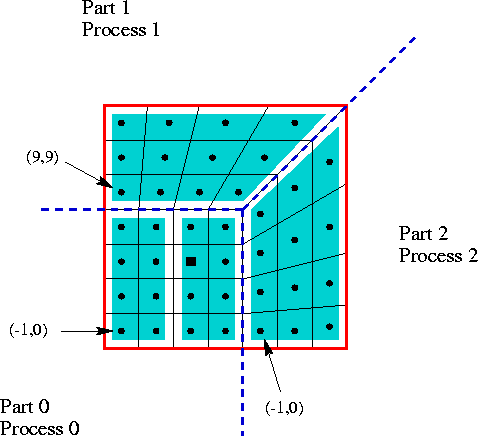

In order to get access to the most efficient and scalable solvers for
semi-structured-grid applications (applications with grids that are
mostly structured, but with some unstructured features), users should
use the SStruct interface described in this chapter. This
interface also provides access to solvers in HYPRE that were
designed for unstructured-grid applications and sparse linear systems
in general. These additional solvers are usually provided via the
unstructured-grid interface (FEI) or the linear-algebraic
interface (IJ) described in Chapters
5 and 6.
Figure 4.1 gives an example of the type of
grid currently supported by the SStruct interface. The grid is
composed of three ``parts''. There is a single cell-centered variable
across the entire grid, except at the grid cell marked with a square,
which has one additional cell-centered variable.

Figure 4.1: An example 2D block-structured grid, distributed accross three processes.
There are five basic steps involved in setting up the linear system to be solved:
Assume (3.1) is discretized using standard 9-pt finite-volumes on the grid pictured in 4.1, and assume that the problem data is distributed across three processes as depicted. In the figure, each grid part is distributed onto a different process, but this need not be the case; each grid part may also be distributed across several processes. Assume for simplicity and illustration that there is a single coupling between the first and second variables in grid part 0 at index (1,2). In general, this variable may also be coupled to variables at neighboring indices.